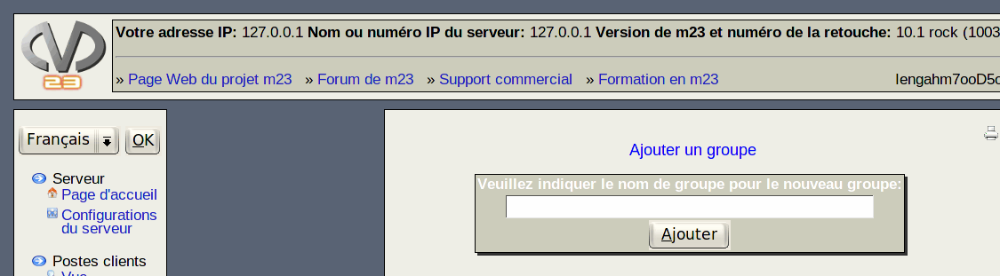

suivant:
Paquets
monter:
Administration des groupes
précédent:
Procédure étape par étape:
Table des matières
Ajouter un groupe
Ici, vous pouvez ajouter un groupe auquel pourront être affectés des postes client. En utilisant des groupes, l'administration de plusieurs postes client dont les logiciels sont identiques est fortement facilitée.

root 2018-01-11